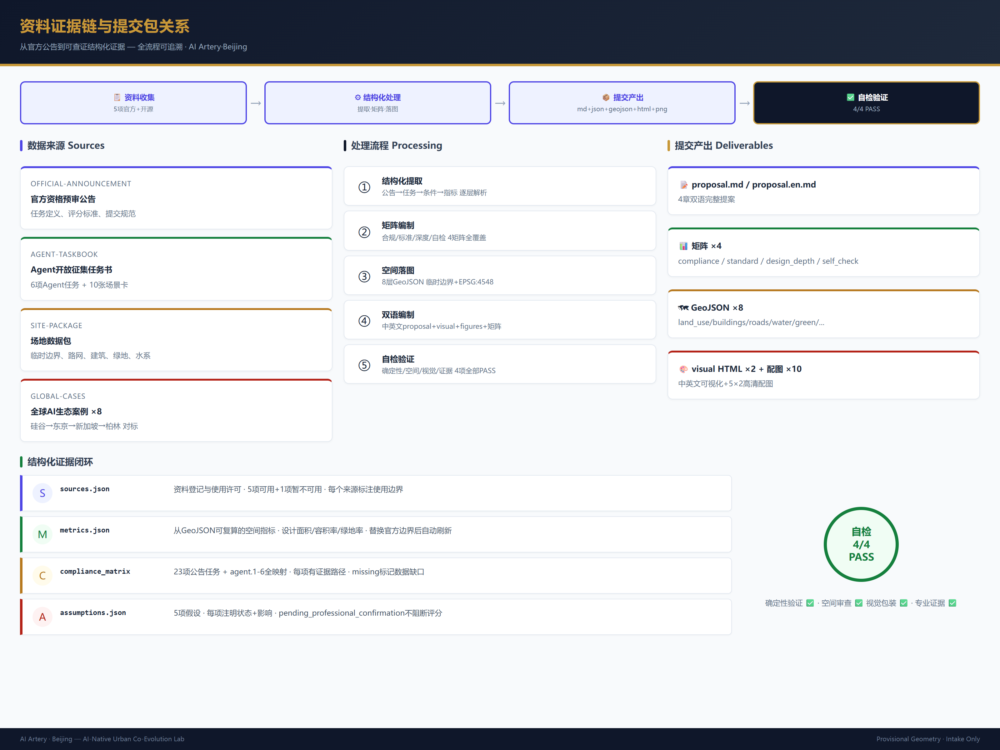
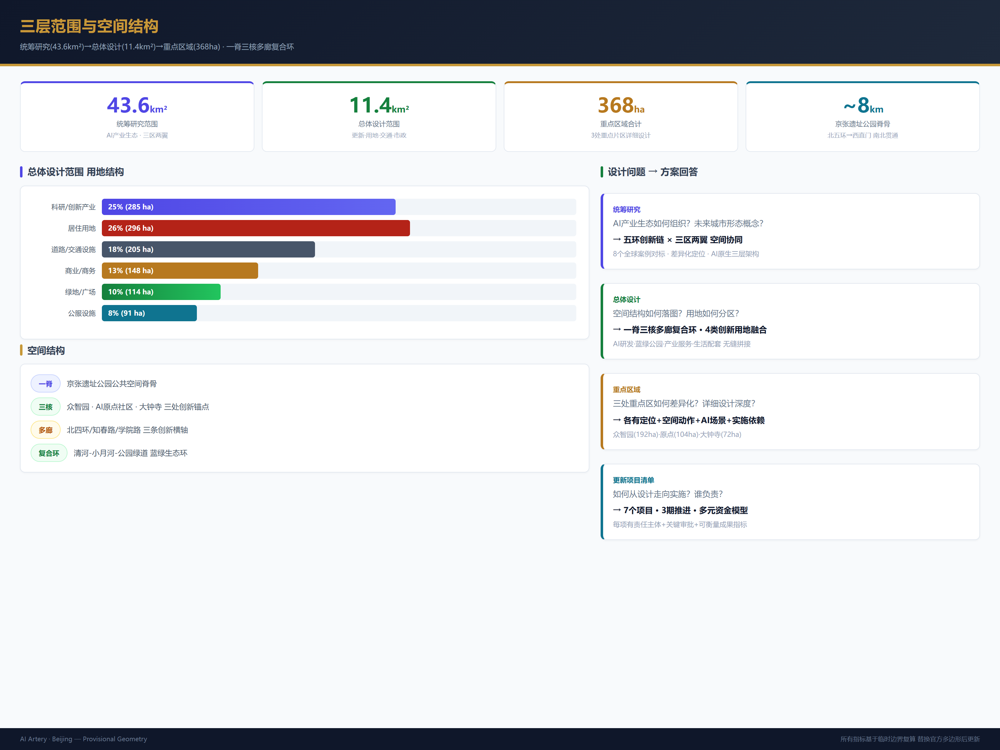
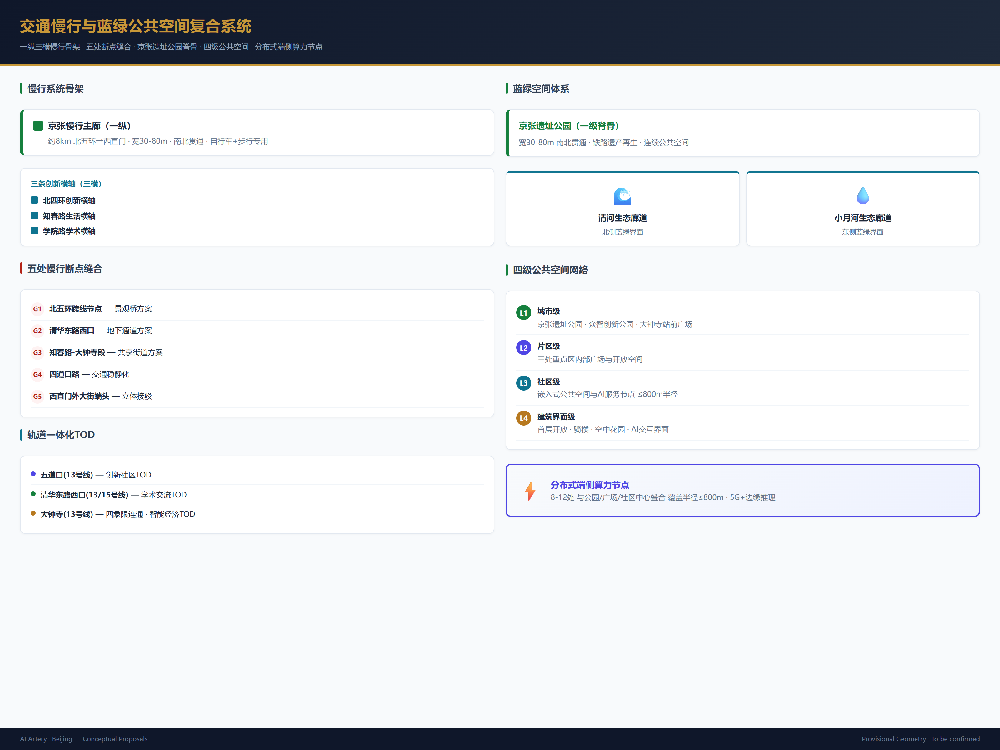
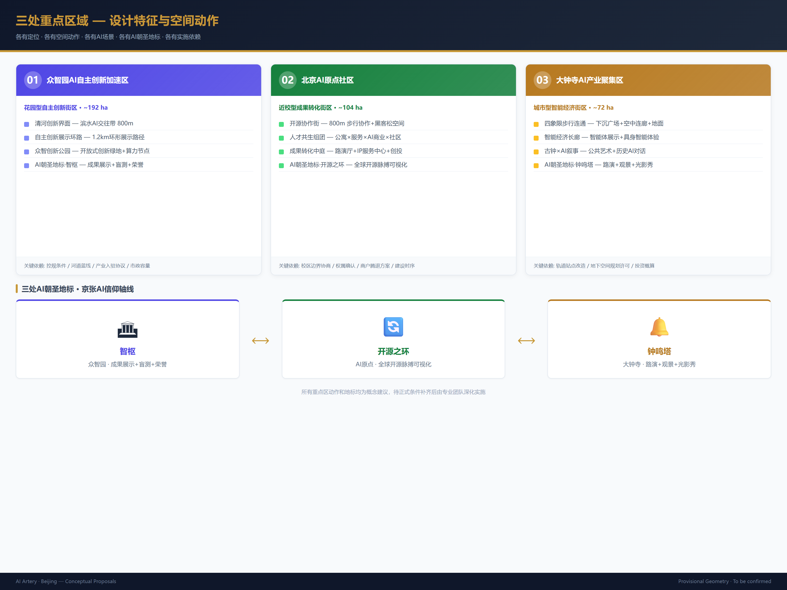
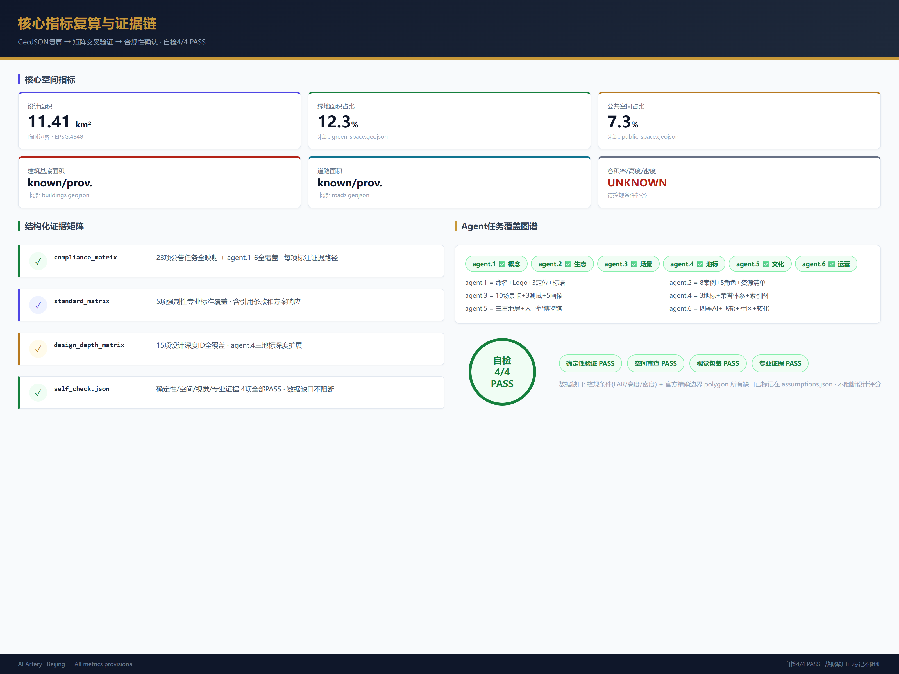

京张智脉：全球首个AI原生城市共生实验带
以AI与城市共生进化理念重构京张走廊，提出AI原生基础设施、三区协同设计、10张场景卡、5类用户画像、3处AI朝圣地标、全球开发者社区运营机制，形成可解析、可复核、可深化的结构化城市设计方案。
京张智脉：全球首个AI原生城市共生实验带
设计依据与资料清单
本方案以北京市规划和自然资源委员会海淀分局发布的《百年京张AI创新带城市设计国际方案征集资格预审公告》为最高依据 来源，以面向全球智能体的开源征集任务书为Agent任务响应框架 来源。方案遵循四条设计原则：(1) AI原生——城市本身成为AI创新平台，而非仅在传统规划上贴AI标签；(2) 场景可感知——AI应用必须转化为公众可见、可触、可交互的城市体验；(3) 文化共生——京张铁路历史遗产、中关村创新文化与AI新文化形成三重叙事；(4) 持续演化——方案提供可运营、可迭代的长期机制而非一次性蓝图。
资料使用边界遵循 data/source_registry.json 登记 来源。当前 formal 可用资料5条，provisional-only 资料1条。由于官方精确SITE_BOUNDARY和KEY_AREA polygon尚未取得，本方案使用 brief/site-package/geometry/provisional_boundaries.geojson 生成临时formal包，所有几何标注为 provisional_constraint、official_boundary=false 空间数据。该组织方数据缺口不阻断内容评分；替换official polygons后需重算全部空间指标。

三层范围工作框架
方案在公告确立的三层范围内组织工作 标准：
**统筹研究范围（43.6km²）**聚焦AI产业生态战略。本方案识别出海淀区"高校策源—开源协作—企业转化—公共体验—国际传播"五环创新链，并将其映射到空间结构中的知识走廊、产业廊道和公共体验带 深度。
**总体设计范围（约11.4km²）**聚焦城市更新与控规深度城市设计。本方案提出"一脊三核、多廊渗透、蓝绿复合环"空间结构：京张遗址公园为公共空间脊骨（一脊），众智园、AI原点社区、大钟寺为创新锚点（三核），轨道站点慢行廊道为日常网络（多廊），清河-小月河-遗址公园绿道为生态基底（复合环）深度 空间数据。
**重点区域范围（约368.4ha）**聚焦三处详细设计。本方案为每处提出独立的空间策略、AI场景组合和实施路径 深度。
| 层级 | 设计问题 | 方案回答 | 数据落点 |
|---|---|---|---|
| 统筹研究范围 | AI产业生态和未来城市形态如何组织 | "五环创新链"空间协同框架：高校策源→开源协作→企业转化→公共体验→国际传播 | compliance_matrix.json |
| 总体设计范围 | 产业空间、城市更新、交通市政如何落图 | "一脊三核多廊复合环"空间结构，用地全覆盖无缝分区 | 空间数据 |
| 重点区域范围 | 三处片区如何达到详细设计深度 | 各有定位、空间动作、AI场景和实施依赖 | 空间数据 |

统筹研究范围产业与未来城市研究
全球AI创新生态与海淀定位
本方案对标全球8个AI创新生态案例（硅谷Palo Alto—科研驱动型、伦敦King's Cross—知识城市更新型、深圳南山—产业集聚型、新加坡one-north—政府规划创新型、东京涩谷—消费与AI融合型、巴黎Station F—垂直孵化型、柏林AI Campus—开源社区型、多伦多Quayside—城市测试床型），提出海淀的差异化定位：**全球唯一聚集顶尖高校、国家实验室、头部企业、开源社区和公共体验在同一走廊的AI原生城市实验带** 来源 深度。
海淀拥有清华、北大、中科院等全球密度最高的AI研究资源，叠加中关村40年创新文化和京张铁路百年工业遗产，构成独特的"三重资本"（智力资本+创新资本+文化资本）。本案提出将三重资本转化为三类空间产品：(1) AI研发空间——面向基础研究与全栈自主创新；(2) AI共创空间——面向开源社区、初创孵化和跨学科协作；(3) AI体验空间——面向公众教育、场景展示和国际交流。
五大功能与三区两翼协同
本案将公告确定的五大功能落实到空间协同回路 标准：
| 功能 | 空间承载 | 协同机制 |
|---|---|---|
| AI全栈自主创新体系 | 众智园为硬件与基础软件策源 | 中关村科技服务翼提供IP、资本和要素配置 |
| 世界级AI创新生态 | AI原点社区为开源与人才枢纽 | 三区之间以慢行绿廊串联，形成半小时创新协作圈 |
| AI+场景赋能新范式 | 小月河场景赋能翼承载测试验证 | 场景开放平台允许企业在公共空间部署可逆、可审计的AI测试 |
| 智能化AI活力城市 | 京张遗址公园为城市体验主轴 | AI服务嵌入公共空间、交通站点和社区中心 |
| AI治理全球话语权 | 众智园承载标准与安全治理 | 与中关村论坛、全球AI治理峰会形成常设会址联动 |
AI原生城市形态概念
本案的核心创新是提出**"AI原生基础设施"（AI-Native Infrastructure）**概念：在京张走廊建设三层叠加的城市操作系统——
- **物理层**：传统城市基础设施（道路、管线、建筑、绿地），但预留AI设备安装接口、算力接入点和数据采集网关。
- **数字层**：分布式端侧算力节点、开放数据平台和城市数字孪生，覆盖全部公共空间和重点建筑。每个轨道站点、公园节点和产业楼宇均配置标准化算力接入端口。
- **体验层**：公众可直接交互的AI界面——包括公共空间中的AI信息亭、可编程灯光与声音装置、增强现实导览系统、以及社区AI服务终端。
三层叠加使得京张走廊不仅是AI公司的办公场所，更是AI技术的**城市级测试床（Urban Testbed）**。每条街道、每个公园、每个广场都可以在受控条件下承载AI场景测试，测试结果直接转化为城市服务升级。该概念属于概念建议和参考方案，供专业团队深化 来源 深度。
总体设计范围城市更新与控规深度城市设计
用地结构与空间分区
本方案基于国土空间用地用海分类指南 标准，将总体设计范围划分为9类用地，形成完整的无缝分区覆盖 空间数据 深度：
| 用地类型 | 面积(ha) | 占比 | 设计策略 |
|---|---|---|---|
| 科研/创新产业用地 | 285 | 25% | 围绕三核布局，兼容研发、中试和轻制造 |
| 商业/商务用地 | 148 | 13% | 沿轨交站点TOD高强度开发，首层AI体验业态 |
| 居住用地 | 296 | 26% | 人才公寓+存量更新，嵌入式社区AI服务 |
| 公共服务设施用地 | 91 | 8% | 分布式布局，AI赋能的学校和医疗 |
| 道路与交通设施用地 | 205 | 18% | 微循环路网+慢行优先+轨道接驳 |
| 绿地与广场用地 | 114 | 10% | 京张遗址公园脊骨+社区绿地网络 |
| 市政设施用地 | 23 | 2% | 端侧算力节点+分布式能源站 |
| 特殊用地 | 11 | 1% | 文保和军事等保留用地 |
| 水域及其他 | 67 | 6% | 清河、小月河及调蓄空间 |
以上指标基于临时边界推算，替换official boundary后重算 指标 指标。
建筑规模与拆改留策略
由于缺少官方控规条件（容积率、建筑高度、建筑密度均标记为 unknown），本方案只提出拆改留方法论和分类框架 深度 深度：
- **保留（Retain）**：具有历史价值的京张铁路遗存（清华园火车站、老铁轨、涵洞和挡土墙）、高校校园核心区、已建成高品质产业楼宇、公共服务设施和蓝绿空间。
- **改造（Renovate）**：老旧工业厂房转为AI共创工坊、存量商业升级为AI体验店、低效办公楼植入垂直绿化与算力接入、老旧小区增加社区AI服务终端。
- **新建（New-build）**：轨道站点TOD上盖、AI原点社区的公共创新中心、众智园的标准化测试场、大钟寺的智能经济展示中心。
待正式控规条件补齐后方可给出定量结论 空间数据 指标。
交通、轨道与市政策略
围绕公告要求 深度 深度：
**慢行缝合**：识别5处慢行断点——北五环跨线节点、清华东路西口、知春路-大钟寺段、四道口路和西直门外大街端头。本案提出以景观桥、地下通道和共享街道三种方式缝合，形成南北贯通的"京张慢行主廊"（长约8km）空间数据。
**轨道一体化**：围绕13号线五道口站、清华东路西口站、大钟寺站和未来的13A/B线站点，组织TOD综合开发。大钟寺站四象限步行连通是本方案交通设计的核心动作。
**新型基础设施**：提出"算力驿站"概念——在总体设计范围内部署8-12处标准化端侧算力接入节点，服务于AI测试、公共体验和企业创新。每个驿站具备能源接入、边缘计算、5G/6G微站和数据沙盒四重功能。属概念建议，具体容量和选点待专业团队深化。

重点区域详细设计
众智园AI自主创新加速区（约192ha）
**设计定位**：花园型全栈自主创新街区——既是国家AI平台的物理承载地，也是公众可步入的AI创新公园 空间数据。
**核心空间动作**： 1. **清河创新界面**：将清河滨水空间转化为AI创新交往带，设置临水讨论平台、AI测试展示长廊和低碳创新交往中心。行人可在此观看自主驾驶测试、机器人配送演示和AI环境监测数据可视化。 2. **自主创新展示环路**：围绕核心研发楼群形成一条1.2km的展示环线，串联硬件实验室、软件开源中心、标准制定工作坊和安全治理展示厅。 3. **众智创新公园**：在片区中心设置开放式绿地，提供非正式交流空间、户外工作区和季节性AI创新市集。
**AI朝圣地标 — "智枢"（AI Pivot）**：位于清河界面中心点的环形建筑，既是AI自主创新成果的展示窗口，也是公众与AI互动的门户。建筑外立面为实时数据可视化屏幕，展示全国AI开源贡献热力图、自主模型训练进度和全球AI安全治理动态。内部设可预约的实验剧场，用于AI模型的公开盲测和红队挑战赛。该地标为概念建议 深度。
北京AI原点社区（约104ha）
**设计定位**：近校型成果转化与全球AI人才共生社区——让基础研究从实验室到市场的距离缩短为一杯咖啡的时间 空间数据。
**核心空间动作**： 1. **开源协作街**：沿校区边界组织一条800m的街道，集中配置开源项目展示、代码贡献墙、非正式协作空间和24小时黑客松场地。地面铺设嵌入代码片段的文化地砖，致敬中关村开源贡献者。 2. **人才共生组团**：围绕地铁站布置人才公寓×社区服务×AI体验商业的混合组团。首层全部为AI服务界面——AI辅助教育、AI健康管理、AI法律服务、AI生活管家。 3. **成果转化中庭**：在片区几何中心设置多层通高的成果展示与发布空间，面向高校和初创团队提供免费的路演场地、知识产权服务和投融资对接。
**AI朝圣地标 — "开源之环"（Open Source Ring）**：悬浮在成果转化中庭上空的可编程LED环，实时显示全球开源项目的star数、commit数和贡献者数。环的亮度和颜色随全球开源活动节奏脉动，成为开源社区的物理心跳。该地标为概念建议 深度。
大钟寺AI产业聚集区（约72ha）
**设计定位**：城市型智能经济与国际交往街区——AI产业的"城市橱窗"，让市民和访客直接体验AI驱动的消费、商务和文化 空间数据。
**核心空间动作**： 1. **大钟寺站四象限连通**：通过下沉广场+空中连廊+地面人行道三重系统，实现四象限的无障碍步行连通。每个象限设置不同的AI体验主题：东北-智能终端展示、西北-内容消费体验、东南-数据要素服务、西南-国际商务路演。 2. **智能经济长廊**：沿主要商业街面组织智能体（Agent）展示、具身智能产品体验、AI生成内容消费和数据资产服务窗口。首层必须是公众可进入的展示和体验空间。 3. **大钟寺文化+AI叙事**：将大钟寺古钟文化与AI"唤醒"叙事相结合——古钟的"醒世"功能映射为AI的"唤醒"意识，在公共艺术和导视系统中贯穿"钟声×代码"的视觉母题。
**AI朝圣地标 — "钟鸣塔"（Bell Echo Tower）**：在大钟寺站上盖的垂直综合体，建筑形态取自古钟的剖面曲线。塔内含AI路演大厅、智能产品体验馆、全球AI创新排行榜和屋顶城市观景台。每逢重大AI发布或全球AI治理里程碑，顶部钟形装置以光影和声音致敬。该地标为概念建议 深度。

AI 创新生态、人才画像与 AI+ 场景
AI创新生态图谱
本案构建五类空间的AI创新生态体系 来源 指标：
| 生态角色 | 代表主体 | 空间需求 | 在三区中的落位 |
|---|---|---|---|
| 基础研究 | 清华、北大、中科院、智源院 | 安静研发+学术交流 | 众智园+原点社区 |
| 开源社区 | 全球开发者、基金会 | 协作空间+发布厅 | 原点社区开源协作街 |
| 初创孵化 | AI创业团队 | 低成本弹性空间 | 原点社区+大钟寺 |
| 头部企业 | 百度、字节、商汤、第四范式 | 展示+商务+招聘 | 大钟寺+众智园 |
| 公众用户 | 市民、游客、学生 | 公共体验+教育 | 京张遗址公园+三区 |
5类用户画像
| 用户画像 | 核心需求 | 空间响应 | 隐私与伦理边界 |
|---|---|---|---|
| **开源开发者** | 代码协作、成果展示、社区归属 | 原点社区24h开源工坊、公共代码贡献墙、季节黑客松场地 | 不采集个人代码行为轨迹；活动数据仅做聚合统计且脱敏 |
| **AI创业者** | 低成本启动、算力获取、投融资对接 | 原点社区弹性办公舱、众智园共享测试场、大钟寺路演厅 | 算力使用和商业数据需另行授权；不追踪企业内部运营 |
| **全球AI访客** | 技术考察、商务洽谈、城市体验 | 大钟寺国际路演客厅、京张文化体验路线、AI场景打卡点 | 访客动线数据匿名化处理；不关联个人身份 |
| **周边居民** | 通勤便利、日常休闲、低扰动更新 | 京张遗址公园日常休闲、社区AI服务终端、分时共享停车 | 不将居民数据用于商业推荐或个人画像；社区服务为opt-in模式 |
| **高校学生/研究者** | 实习通道、成果展示、跨校交流 | 原点社区成果转化中庭、跨校AI俱乐部、导师匹配空间 | 科研成果和校园数据需授权后方可使用 深度 |
10张AI场景卡
| 编号 | 场景名称 | 空间载体 | AI技术 | 体验设计 | 运营与治理 |
|---|---|---|---|---|---|
| SC-01 | **开源脉搏广场** | AI原点社区·开源协作街 | 开源项目实时分析、贡献者网络可视化 | 地面LED屏显示全球开源贡献热力图，路人对项目star即可通过NFC为开发者"致敬" | 数据来源：GitHub/GFM公开API；不追踪个人开发者 |
| SC-02 | **AI安全沙盒剧场** | 众智园·智枢 | 模型红队测试、对抗样本挑战、安全审计报告自动生成 | 公众可预约观看AI模型盲测过程，每场测试结果实时投影到建筑外立面 | 测试模型和数据集需提前备案；安全结果经专业团队审核后公开 |
| SC-03 | **端侧算力充电站** | 总体范围8-12个站点 | 边缘AI推理、设备充电、环境传感 | 市民在公园休息时为手机和AI设备充电，同时与站点的本地AI助手交互 | 算力配额和访问日志需脱敏审计；不存储个人设备数据 |
| SC-04 | **AI慢行领航员** | 京张遗址公园慢行主廊 | 计算机视觉+环境传感+可解释AI | 通过可变信息标识和低侵入传感，动态引导慢行路线、标示拥挤节点和推荐无障碍路径 | 传感数据仅保留必要统计指标；不进行人脸识别或个体追踪 |
| SC-05 | **大钟寺AI万花筒** | 大钟寺·智能经济长廊 | 生成式AI+增强现实+具身智能 | 沿街AI展示窗、智能体体验店、AR历史导览（古钟文化×AI叙事），每季轮换主题 | 商业展示需标注"AI生成/AI辅助"；AR内容经文化部门审核 |
| SC-06 | **清河AI生态观测站** | 众智园·清河创新界面 | 环境AI+IoT传感+物种识别 | 沿清河设置AI生态观测点，公众可通过AR观察到水质、鸟类、植被的历史变化和AI预测 | 生态数据开源共享；不涉及敏感物种位置披露 |
| SC-07 | **近校成果转化快闪街** | AI原点社区·成果转化中庭 | 匹配推荐+知识产权AI审查+虚拟路演 | 每月最后一个周五举办AI成果快闪展，创业者3分钟路演→AI匹配投资人→现场对接 | 项目信息脱敏后发布；投资决策由人类完成 |
| SC-08 | **数据要素会客厅** | 大钟寺·东南象限 | 联邦学习+隐私计算+数据沙盒 | 企业可在可控沙盒中展示数据价值，需求方可安全试算；全过程审计和可视化 | 数据不出沙盒；使用记录存证但不公开商业机密 |
| SC-09 | **AI生活服务样板街** | 总体范围社区与商业交汇处 | AI教育+AI医疗+AI法律+AI生活管家 | 嵌入社区底商的AI服务窗口，提供可预约的个性化服务，服务效果公开评分 | 服务过程脱敏记录；用户随时可选择退出；人类专业审核为最终裁决 |
| SC-10 | **全球AI创新周** | 一带公共空间系统 | 活动管理AI+多语言翻译+公共安全AI | 每年秋季举办，形成从遗址文化开幕→开源社区马拉松→产业展示→国际路演的可步行体验轴线 | 活动方案提前公示；安全预案经公安审核；参与者数据仅用于活动统计 |
所有场景卡的AI治理遵循数据最小化、公开来源、可解释、可人工复核原则。技术描述不构成产品承诺 来源 深度。
3个产业测试验证场景
| 编号 | 测试场景 | 测试场地 | 测试对象 | 评估标准 |
|---|---|---|---|---|
| TEST-01 | **自主配送末端验证** | 众智园+原点社区的限定慢行区域 | 低速自主配送机器人 | 避障成功率、配送时效、公众接受度、安全事件率 |
| TEST-02 | **公共空间AI安防审计** | 京张遗址公园试点段 | AI辅助的公共安全监测系统 | 误报率、隐私保护合规、人工复核效率、公众满意度 |
| TEST-03 | **多语种AI城市导览** | 大钟寺至京张公园的公共路线 | 多语言实时翻译与AR导览 | 翻译准确率、用户体验评分、文化敏感性、无障碍覆盖 |
测试验证场景需经主管部门批准和公众公示后方可实施；测试结果和数据开源共享（脱敏后）来源。
用地、建筑规模与拆改留方案
用地分类和空间布局已在上文总体设计范围中说明。关键在于所有用地polygon共享边界且无缝覆盖 空间数据 标准。
建筑方案遵循三类处理策略 深度：
- **保留**：历史遗存、高校核心建筑、高品质产业楼宇、已建成公共服务设施。
- **改造**：老旧工业厂房→AI共创工坊、存量商业→AI体验业态、老旧小区→人才友好社区、低效办公楼→垂直创新综合体。
- **新建**：轨道站点TOD、公共创新中心、AI测试场地和社区服务设施。
由于缺少容积率、建筑高度、建筑密度和退线等官方控规条件，本案不给出精确数值。所有建筑规模指标标记为 unknown 并说明缺失原因 指标 指标。待控规条件确认后方可给出定量结论。
交通、轨道、市政与公共服务设施
**慢行系统**：构建"一纵三横"慢行骨架。一纵为京张慢行主廊（北五环—西直门，约8km），三横为北四环创新横轴、知春路生活横轴、学院路学术横轴 空间数据 深度。
**轨道一体化**：围绕五道口站（13号线）、清华东路西口站（13号线/15号线换乘）、大钟寺站（13号线）组织TOD。大钟寺站四象限连通是本方案交通设计的核心动作——方案提出通过下沉商业广场+空中连廊+地面人行横道三重系统实现 空间数据。
**新型基础设施**：提出分布式端侧算力节点网络，与公园、广场和社区中心叠合。属概念建议，不被批准为工程方案或市政标准 深度。
蓝绿空间、公共空间与城市风貌
蓝绿骨架
以京张遗址公园为一级脊骨（宽30-80m不等，南北贯通），清河、小月河为二级生态廊道，社区绿地、口袋公园和建筑中庭花园为三级渗透节点 空间数据 深度。
公共空间体系
构建四级公共空间网络 空间数据： 1. **城市级**：京张遗址公园、众智创新公园、大钟寺站前广场。 2. **片区级**：三处重点区的内部广场和开放空间。 3. **社区级**：嵌入式社区公共空间和AI服务节点。 4. **建筑界面级**：首层开放、骑楼和空中花园。
城市风貌与文化叙事
本案提出"三重文化地层"的城市风貌策略 深度 标准：
- **底层·京张铁路文化**：保留铁轨、信号灯、涵洞、挡土墙和清华园火车站作为空间记忆锚点。以"轨道"为视觉母题贯穿导视系统。
- **中层·中关村创新文化**：将硅谷车库精神、中关村电子一条街历史和互联网创业浪潮作为空间叙事元素，在公共艺术和建筑界面上呈现。
- **表层·AI新文化**：AI生成的艺术装置、数据驱动的动态照明、开源社区的公共表达、以及全球AI里程碑事件的空间纪念。
导视系统提出"代码×铁轨"视觉语言：主色调为深灰（铁轨）+蓝色（AI代码）+暖橙（文化活力）。品牌标识方向为一个由代码字符组成的"京"字印章 来源。
更新项目清单、实施政策与分期计划
项目实施框架
以下7个旗舰项目遵循海淀区城市更新流程：立项申报→方案审查→规划许可→施工图审查→施工许可→竣工验收。项目按近期（1-3年）、中期（3-7年）、远期（7-15年）分三期推进，每期设定可衡量的里程碑和退出标准。以下均为概念建议，不构成实施承诺。
| 编号 | 项目名称 | 类型 | 阶段 | 责任主体 | 关键审批/依赖 | 可衡量成果指标 |
|---|---|---|---|---|---|---|
| JZ-01 | 京张慢行断点缝合（5处） | 公共空间/交通 | 近期 | 海淀区交通委、市规自委海淀分局 | 跨线许可、道路红线、市交通委审批 | 5处断点连通率100%；慢行流量提升30%（对比基年） |
| JZ-02 | 众智园清河创新界面 | 蓝绿/产业展示 | 近期 | 中关村科学城管委会、海淀区水务局 | 河道蓝线、生态许可、产业入驻协议 | 滨水界面开放1.2km；年公众活动≥24场 |
| JZ-03 | 原点社区开源协作街 | 城市更新/产业 | 近中期 | 海淀区更新办、属地街道、清华/北大资产处 | 校区边界协商、权属确认、商户腾退方案 | 入驻开源项目≥30个；协作空间使用率≥70% |
| JZ-04 | 大钟寺站四象限连通 | TOD/慢行 | 中期 | 京投公司、海淀区规自分局、海淀区商务局 | 轨道站点改造计划、地下空间规划许可、投资概算 | 四象限步行通过时间≤3分钟；日均换乘人流≥5万 |
| JZ-05 | AI算力驿站网络 | 新基建/公共服务 | 近中期 | 海淀区科信局、国家电网海淀公司、运营服务商 | 能源接入容量、运营主体招标、设备选型与安全认证 | 8-12驿站覆盖半径≤800m；算力可用率≥99% |
| JZ-06 | 三处AI朝圣地标 | 公共建筑/品牌 | 中远期 | 海淀区文旅局、国际建筑设计竞赛组委会 | 建筑设计竞赛、投资概算、文化地标审批 | 年访客≥50万人次；媒体曝光覆盖全球Top10科技媒体 |
| JZ-07 | 全球AI创新周路线 | 运营/品牌 | 远期 | 海淀区政府、中关村论坛秘书处、公安分局 | 大型活动安保许可、品牌授权、国际合作备忘录 | 年参与≥5万人次；覆盖≥30个国家/地区 |
分期逻辑与实施政策
**近期（1-3年）**以慢行缝合和滨水激活为切入点——基础设施投入低、公众获得感强、不依赖控规调整。先行项目（JZ-01/02/05）作为试点窗口，通过"规划许可豁免+临时使用许可"机制加速落地。**中期（3-7年）**发力城市更新和TOD——控规条件确定后推进拆改留和站点一体化，以"容积率奖励+公共空间贡献"政策激励市场主体参与。**远期（7-15年）**释放品牌地标和国际运营——在产业成熟、社区稳定后建设朝圣地标，以全球AI创新周实现品牌闭环。
运营治理与资金模型
建议设立"京张智脉创新带发展理事会"，由海淀区政府、中关村科学城管委会、入驻企业代表、高校和社区代表组成，负责战略协调、年度计划审批和效果评估。资金采取"政府引导基金（30%）+社会资本（40%）+运营收入（20%）+创新资助（10%）"组合模型，不依赖单一财政渠道。年度运营报告公开KPI达成情况。
以上项目清单、分期和治理模型均为概念建议，供专业团队结合控规和工程条件深化 空间数据 深度 深度。
指标体系、面积复算与合规矩阵
核心空间指标 指标 指标 指标：
| 指标类别 | 指标 | 状态 | 说明 |
|---|---|---|---|
| 总体范围 | 设计面积 | 约11.4km² (provisional) | 基于临时边界在EPSG:4548下计算；official boundary到后重算 |
| 绿地 | 绿地面积及占比 | known/provisional | 从green_space.geojson计算 |
| 公共空间 | 公共空间面积及占比 | known/provisional | 从public_space.geojson计算 |
| 道路 | 道路面积及占比 | known/provisional | 从roads.geojson计算 |
| 建筑 | 建筑基底面积 | known/provisional | 从buildings.geojson计算 |
| 控规管控 | 容积率、建筑高度、密度 | unknown | 待正式控规条件补齐 |
| 重点区 | 三处重点区面积 | known/provisional | 基于provisional key_areas polygons |
| AI场景 | 场景卡/测试/画像/地标数量 | known | 10卡3测试5画像3地标满足任务书要求 |
所有known指标可从GeoJSON复算 深度。unknown指标给出原因和甄补条件。

Agent任务书响应
Agent.1 — 一带总体概念与功能统筹
本案提出命名体系：**主名"京张智脉"（Jing-Zhang Intelligence Artery）**，英文品牌名 **"AI Artery·Beijing"**。Logo方向：以"京"字为印、代码字符为笔画、铁轨横截面为外框的印章式标识。三大定位（文化带、生活体验带、融合创新带）分别对应三条并行交织的设计线索 来源。
Agent.2 — AI全栈创新生态
8个全球AI创新生态案例已在上文呈现。AI创新生态图谱将五大生态角色（基础研究、开源社区、初创孵化、头部企业、公众用户）映射到五类空间载体和三区两翼布局中 来源。
Agent.3 — AI+场景赋能
10张场景卡（SC-01至SC-10）、3个测试验证场景（TEST-01至TEST-03）、5类用户画像已在上文完整呈现。场景-空间-运营映射表明每张场景卡均有明确的空间载体、技术方案、体验设计和治理边界 来源。
Agent.4 — AI公共空间与朝圣地标
3处AI朝圣地标（智枢、开源之环、钟鸣塔）已在上文重点区域设计中详述。荣誉展示体系采用"代码贡献墙×创新里程碑碑×AI名人堂"三类载体，分布于三处重点区的公共空间 来源。
Agent.5 — 百年京张文化融合叙事
三重文化地层策略（铁路遗产+中关村创新+AI新文化）已在上文城市风貌中详述。文化叙事主线为：从詹天佑的"人"字线到AI的"智"字网，中国人自主创新的精神百年传承。"人"字线switchback的工程智慧映射到AI时代的人机协作转折 来源。
Agent.6 — 全球AI创新活动与长期运营
本案提出**"四季AI"年度活动体系**：
- **春·开源季**（3-5月）：全球开源马拉松、代码贡献墙更新、跨校AI俱乐部联赛。
- **夏·体验季**（6-8月）：AI场景公众开放日、清河科技艺术节、夜间AI光影秀。
- **秋·创新周**（9-10月）：全球AI创新周（旗舰活动）、AI路演大赛、国际AI治理圆桌。
- **冬·回顾季**（11-2月）：年度AI城市报告发布、优秀场景评选、翌年活动预告和合作伙伴招募。
**开发者社区运营**：在AI原点社区设立常设的"京张AI开发者俱乐部"，提供协作空间、导师网络、算力赞助和开源项目孵化。运营经费来源为政府引导+企业赞助+活动收入，不依赖单一财政渠道。**转化路径**：开放场景→企业测试→产品迭代→商业落地→城市服务升级的闭环。
以上活动体系和运营机制均为概念建议，供专业运营团队深化 来源。
风险、版权与合规说明
**双语言要求**：本方案主文件为中文（proposal.md），已创建完整英文对照版本（proposal.en.md），两者结构、章节、指标和图表保持一致 标准。A3/A0 PDF和HTML已配套双语版本。
**版权与数据**：所有图片、数据、代码和文字由AI agent生成或引用公开/清权来源，来源和许可在sources.json和copyright_statement.md中登记 来源。
**法律边界**：本方案不声称官方批准、审定控规、最终土地权属、投资承诺或保证实施。所有空间落地建议均表述为"概念建议""参考方案""可供专业团队深化研究"。不包含非公开政府数据、个人隐私或未授权版权材料。
**已知风险**：(1) 官方SITE_BOUNDARY和KEY_AREA polygon缺失，所有空间指标基于临时边界推算；(2) 控规条件（容积率、高度、密度、退线、道路红线）缺失，建筑和交通定量结论受限；(3) 权属、市政管线、文保和消防资料缺失，更新项目清单为概念性；(4) 历史数据可能滞后或存在精度偏差。
以上风险均已在assumptions.json中登记并在各章节中标注 深度 空间数据。
参考资料
- brief/site-package/design_brief.json — 场地包主控文件 来源
- brief/site-package/agent_taskbook.json — Agent任务书 来源
- brief/site-package/geometry/provisional_boundaries.geojson — 临时边界 空间数据
- brief/site-package/ranges/planning_limits.json — 已知面积值与管控缺口
- data/source_registry.json — 资料登记与用途边界 来源
- data/processed/agent_fact_pack.md — Agent事实包
- 完整结构化证据：见 sources.json、metrics.json、compliance_matrix.json、standard_matrix.json、design_depth_matrix.json 深度